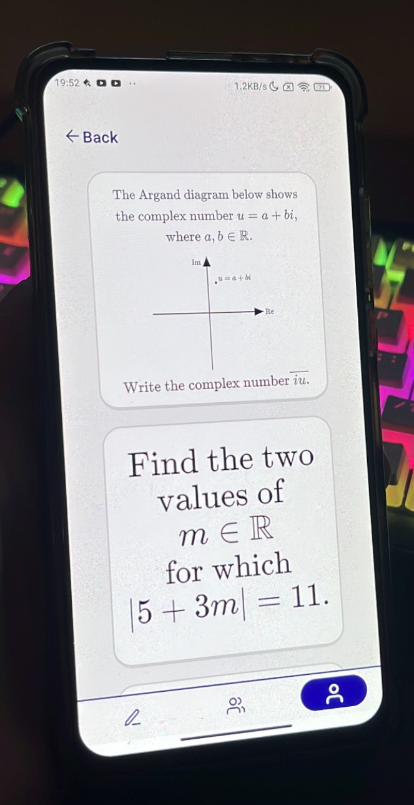
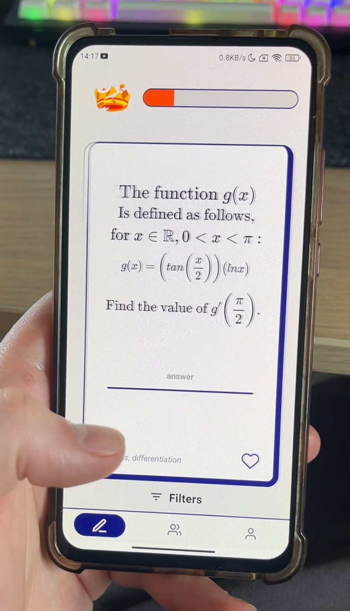
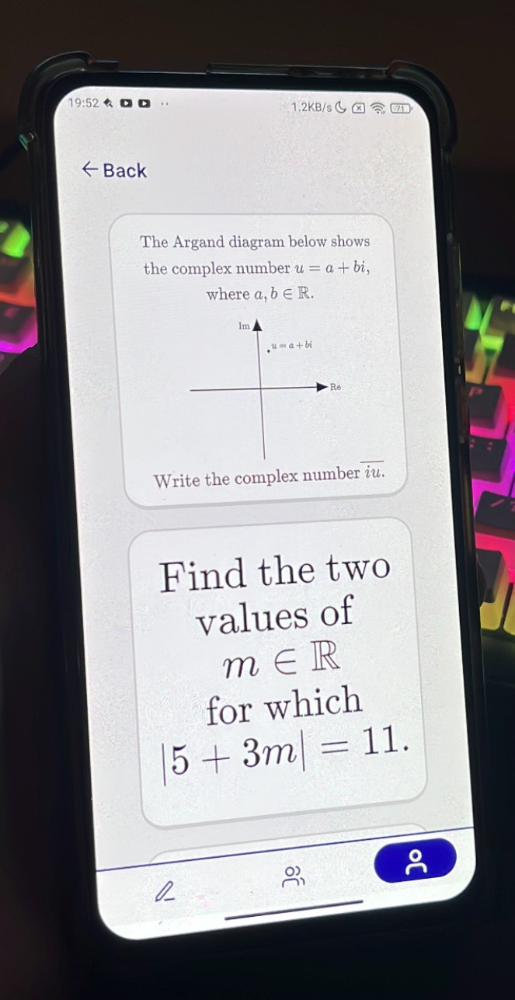
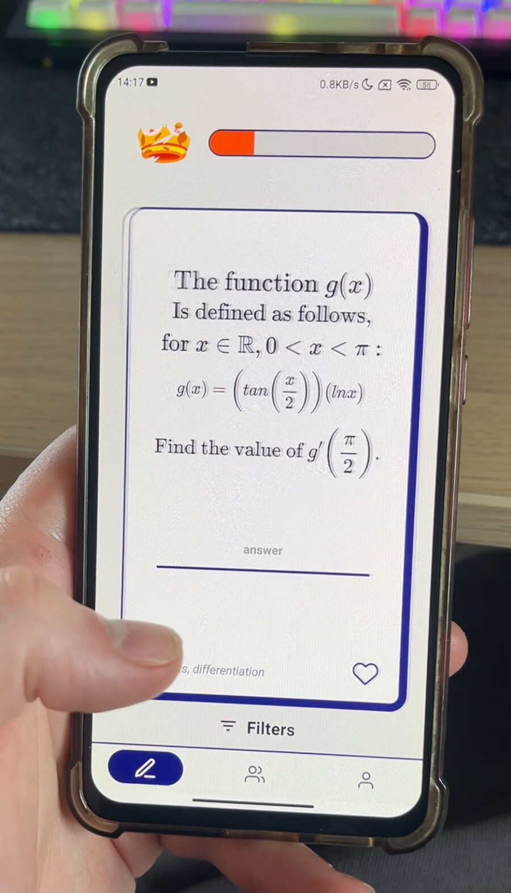

CertChamps
CertChamps is a huge project that me and my colleague Benjamin Long have been working on for the past 4 months.
This is a competitive leaving cert focused mobile app that will aim to make practicing questions a more enjoyable experience for many students. Currently we have developed an infinite feed of flashcards that is very reminiscent of apps like TikTok aswell as the ability to save questions, add friends, and rank up. When you add a friend you are able to start challenges with them where a timer will start and you will both be dealt 3 flashcards. Whoever solves them the quickest will gain XP that will contribute to their rank. The questions in our feed are uniquely made and are not just questions taken from leaving cert papers.
In the future we plan on implementing a social feed where you can post questions, ask for help, see when your friends have ranked up and collaborate on different topics. In addition to this we plan on making use of Ai to generate the questions in the TikTok style feed to make it truly infinite.
Whether this project takes off and becomes a useful tool for students or not, I believe the experience that both of us have gained has been invaluable. We have learned how to build an app, manage databases and create websites all while maintaining a clean, coherent and polished design.
This app is scheduled for release by September and we are very excited to share it! The pictures show just a peak at what we have so far but there is far more to show. More updates will come soon.
 


